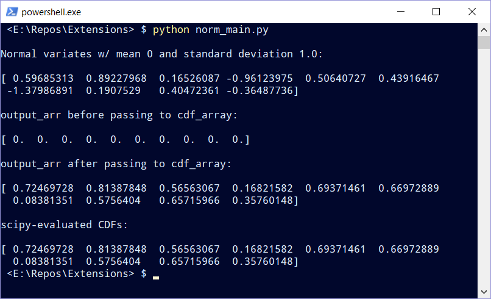
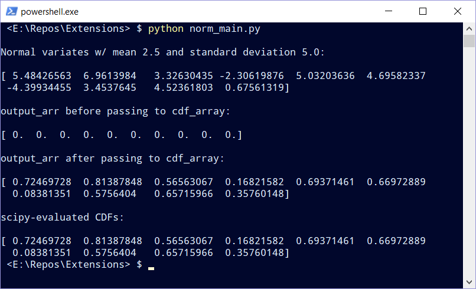

ctypes is part of the Python standard library which provides C compatible data types and allows calling functions in shared libraries. It can be used to wrap libraries written in compiled languages from Python.
In this post, we’ll demonstrate how to call functions written in C from Python using ctypes. The functions take as input an array of normal variates with specified mean and variance, then compute the normal CDF for each input array element. The sample code also demonstrates how to link to the C math library during compilation.
Normal CDF
Our goal is to be able to call a C-implemented normal cumulative distribution function (CDF) from Python, which takes as input a value \(x\), mean \(\mu\), standard deviation \(\sigma\) and returns the corresponding CDF of \(x\) (which ranges from 0 to 1). In addition, a second function that populates an array of evaluated normal quantiles for a given input array will be created.
The standard C math library doesn’t expose a subroutine to calcuate the normal CDF directly, but it does expose the error function \(\mathrm{erf}\) and the complementary error function \(\mathrm{erfc}\). \(\mathrm{erf}\) is defined as
\[ \mathrm{erf}(x) = \frac{2}{\sqrt{\pi}}\int_{0}^{x} e^{-t^{2}}dt, \]
and \(\mathrm{erfc}\) is the complement of \(\mathrm{erf}\):
\[ \mathrm{erfc}(x) = 1 - \mathrm{erf}(x). \]
Recall that the normal probability density function (PDF) is given by
\[ f(x| \mu,\sigma) = \frac{1}{\sqrt{2 \pi \sigma^{2}}} e^{-\frac{(x-\mu)^{2}}{2\sigma^{2}}}. \]
Given the similarity between \(\mathrm{erf}\) and the normal PDF, it’s possible to use \(\mathrm{erf}\) to calculate any normal quantiles of interest. Let \(\Phi(x)\) represent the normal CDF evaluated at \(x\). \(\Phi(x)\) can be obtained using the following identity:
\[ \begin{align*} \Phi(x)&=\frac{1}{\sqrt{2 \pi}}\int_{-\infty}^{x} e^{\frac{-t^{2}}{2}}dt \\ &=\frac{1}{2}\Big[1 + \mathrm{erf} \Big(\frac{x}{\sqrt{2}}\Big)\Big] \\ &=\frac{1}{2}\Big[\mathrm{erfc} \Big(-\frac{x}{\sqrt{2}}\Big)\Big]. \end{align*} \]
When \(x\) is large, \(\mathrm{erfc}\) should be used in place of \(\mathrm{erf}\).
One final point: The identity relating the normal CDF and $: returns quantiles from the standard normal distribution which has zero mean and unit variance. To transform a normal distribution with arbitrary mean and variance into standard form, we use the familiar transformation:
\[ z = \frac{x - \mu}{\sigma}. \]
We can then evaluate \(z\) to obtain the corresponding normal quantile. We’ll use this point in our implementation as well.
### C Implementation
The actual implementation of our normal CDF computator will consist of a single .c file norm.c. What follows are the contents of norm.c:
/*
Determine the Normal CDF of x given mean `mu`
and standard deviation `sigma`.
`x` => value for which the normal CDF will be determined
`mu` => mean of the corresponding normal distribution
`sigma` => standard deviation of the corresponding normal distribution
*/
#include <math.h>
double norm_cdf(double x, double mu, double sigma)
{
double cdf; // variable to hold result
double z; // transformation to standard normal
const double SQRT_2 = 1.4142135623730951;
z = (x - mu) / sigma;
// if x > 3, call erfc; otherwise call erf
if (x >= 3) {
cdf = .5 * erfc(- z / SQRT_2);
}
else {
cdf = .5 + .5 * erf(z / SQRT_2);
}
return(cdf);
}
/*
For a given array of arbitrary normal variates, calculate
the corresponding quantiles using `norm_cdf`.
`mu` => mean of the corresponding normal distribution
`sigma` => standard deviation of the corresponding normal distribution
`n` => the length of input_array/output_array
`input_array` => array of inputs (doubles)
`output_array` => array of computed normal CDFs
*/
void cdf_array(double mu, double sigma, int n,
double* input_array, double* output_array)
{
int i;
// For each element of input_array, call norm.
for (i=0; i<n; i++) {
output_array[i] = norm_cdf(input_array[i], mu, sigma);
}
}Our ultimate goal is to create a shared library that contains the C functions norm_cdf and cdf_array which can be accessed using ctypes and called from within Python. The first step is to compile norm.c into an object file. For gcc, the -c flag is used to compile a source file into an object file:
$ gcc -Wall -fPIC -lm -c norm.c The -lm flag precludes us from having to include the full path and name of the C math library. Upon completion, the object file norm.o will be output to the same directory in which norm.c resides.
In the next step we create the shared library. Linux shared libraries have .so extensions. The following command creates norm.so in the same directory as norm.c and norm.o:
$ gcc -shared -o norm.so norm.o Brief aside: If we had a collection of files that we wanted to compile into a single shared library, we’d list them one after the other. If instead of norm.o we had norm1.o, norm2.o and norm3.o, the command would become:
$ gcc -shared -o norm.so norm1.o norm2.o norm3.oDoing so would also produce a single norm.so file in the working directory, same as the command referencing a single object file.
Calling C Functions from Python
Prior to calling our C functions from Python, we need to specify the parameter and return types of norm_cdf and cdf_array. In addition, we need to coerce any Python data types that are passed to the library functions into C-compatible data types. This is demonstrated below, with each section commented to make it easier to follow along. This is a Python file named as norm_main.py:
#!/usr/bin/env python
"""
norm_main.py
Calls 2 functions from the compiled C library `norm.so`:
[+] double norm(double x, double mu, double sigma)
[+] void cdf_array(double mu, double sigma, int n,
double* input_array, double* output_array)
"""
import ctypes
import numpy as np
from scipy.stats import norm
np.set_printoptions(suppress=True)
# Provide full path to shared library.
LIB_PATH = "norm.so"
# Bind reference to shared library `norm.so`.
normlib = ctypes.cdll.LoadLibrary(LIB_PATH)
# Specify argument datatypes for norm_cdf and cdf_array.
normlib.norm_cdf.argtypes = [
ctypes.c_double, ctypes.c_double, ctypes.c_double
]
normlib.cdf_array.argtypes = [
ctypes.c_double, ctypes.c_double, ctypes.c_int,
ctypes.POINTER(ctypes.c_double), ctypes.POINTER(ctypes.c_double)
]
# Specify return datatypes for norm_cdf and cdf_array (cdf_array declared as void).
normlib.norm_cdf.restype = ctypes.c_double
normlib.cdf_array.restype = None
# Use scipy.stats to generate 10 standard normal random variates. This will
# be `input_arr`. We also initialize `output_arr` to all zeros, and set the
# random seed in numpy for reproducibility.
np.random.seed(516)
mu, sigma, n = 0., 1., 10
input_arr = norm.rvs(loc=mu, scale=sigma, size=n)
output_arr = np.zeros(n, np.float_)
# Initialize ctypes-compatible versions of mu, sigma, n, input_arr and output_arr.
ct_mu = ctypes.c_double(mu)
ct_sigma = ctypes.c_double(sigma)
ct_n = ctypes.c_int(n)
ct_input_arr = np.ctypeslib.as_ctypes(input_arr)
ct_output_arr = np.ctypeslib.as_ctypes(output_arr)
print(f"\nNormal variates w/ mean {mu} and standard deviation {sigma}:\n{input_arr}")
print(f"\nOutput_arr before passing to cdf_array:\n{output_arr}")
# Call `normlib.cdf_array` from C library.
normlib.cdf_array(ct_mu, ct_sigma, ct_n, ct_input_arr, ct_output_arr)
print(f"\nOutput_arr after passing to cdf_array:\n\{output_arr}")
# Compare results returned by cdf_array to scipy's norm.cdf.
spcdfs = norm.cdf(input_arr, loc=mu, scale=sigma)
print(f"\nscipy-evaluated CDFs:\n\{spcdfs}")To summarize, we read in norm.so, specify the parameter and return data types for the library functions, then call cdf_array. In the last few lines, we compare the output of cdf_array with norm.cdf from scipy.stats, and find the results to be identical.
Note that we are not copying data, but simply passing pointers to the data from Python to C. In C, the data pointed to is operated on, which means we do not need to pass any data back. This explains why cdf_array’s return type is void.
Also note that calculating normal CDFs for a sequence of normal variates can be accomplished more efficiently using Scipy. This particular example was chosen to demonstrate non-trival ctypes extensibility, but the example itself should be considered a demonstration of the method, not an optimal approach for computing normal CDFs.
The following terminal capture verifies that CDFs calculated with cdf_array and scipy are the same:

Finally, we compare CDFs for normal variates generated from a non-standard normal distribution. The only change we need to make in norm_main.py is to update mu and sigma. Setting mu=2.5 and sigma=5 yields:
